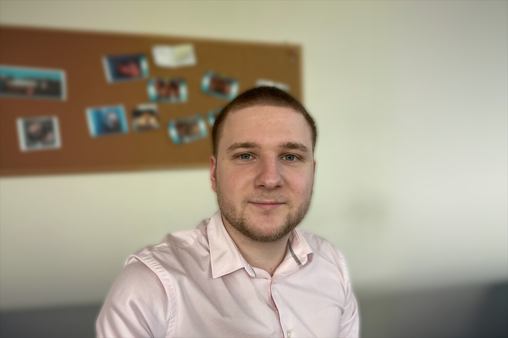

Mon expérience
Après plus d’un an et demi à mon compte, j’ai décidé pour plusieurs raisons de me réorienter dans le développement informatique. Tout d’abord, c’est le secteur bancaire qui aura eu raison de moi : la montée soudaine et rapide des taux a bloqué la majeure partie des activités tournant autour du prêt immobilier. Mais c’est surtout un travail sur moi-même qui m’a donné envie de me diriger vers ce secteur, une envie de m’épanouir davantage en pratiquant un métier qui me correspond : un besoin d’utiliser ma fibre artistique tout en me permettant d’être stimulé intellectuellement, et d’avoir un sentiment d’utilité.Mes compétences
Hard skills :- HTML (débutant)
- CSS (débutant)
- Python (débutant)
- Logique
- Créativité
- Résolution de problèmes
- Soif d'apprentissage
- Veille informatique
Mon expérience
Ne m’épanouissant pas dans le monde de la banque, j’ai décidé de me mettre à mon compte dans le secteur du courtage en prêts immobiliers. Je suis devenu mandataire dans le groupe Cafpi, et ai pu accomplir mon souhait de me spécialiser dans le domaine des prêts immobiliers. J’ai alors eu l’opportunité d’accompagner des clients acquéreurs de biens en les mettant en relation avec des banques, tout en négociant le meilleur dossier de prêt possible. J’ai également dû entretenir des relations avec mes partenaires bancaires et professionnels du secteur de l’immobilier faisant partie de mon réseau. Cette expérience aura duré un peu moins de deux ans.Mes compétences
Hard skills :- Gestion d'un réseau de partenaire
- Négociation
- Suivi de projets
- Rédaction de comptes-rendus
- Prospection commerciale
- Ecoute active
- Gestion du stress
- Rigueur
- Prise d'initiative
- Autonomie

Mon expérience
Fort de quatre années d’expérience en banque, lors d’une licence professionnelle Banque, et un Master Banque des professionnels et Management d’Agence, le tout en alternance, ainsi que d’un an de CDI, j’ai été formé afin d’exercer le poste de chargé de clientèle, pour la clientèle particulière et professionnelle. J’ai eu l’occasion d’y gérer un portefeuille de clients particuliers, et d’effectuer des opérations bancaires (prêts à la consommation et immobiliers, gestion de découverts, traitements de demandes entrantes, placements financiers) et d’assurance (assurance de biens et assurance des personnes).Mes compétences
Hard skills :- Gestion d'un portefeuille de clients
- Veille informative
- Gestion de risque
- Suivi de dossiers
- Capacité d'analyse
- Communication
- Curiosité
- Intelligence émotionnelle
- Esprit d'équipe
- Organisation
Mes passions :
Musique

Jeux-vidéos

Echecs

Squash
Randonnée